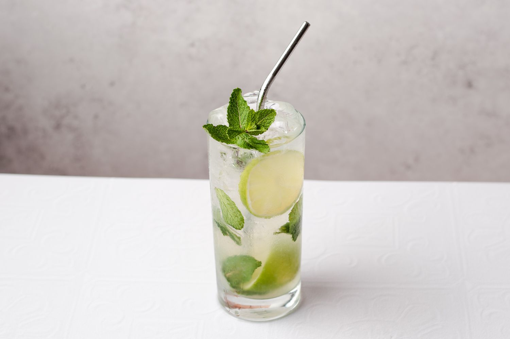

Cuban Mojito
This Cuban mojito is very similar to the drinks I enjoyed in Varadero, Cuba. The muddling and the order of the ingredients helps ensure that all the flavors are well blended. Serve with a straw and a decorative stir stick to keep the different flavors well mixed together.

- Place 1 teaspoon sugar each into two 12-ounce glasses. Squeeze juice from a lime wedge into each glass and drop in the wedge. Place 2 mint sprigs into each glass. Use a spoon or muddler to mash lime mixture together in the bottom of the glasses.
- Fill each glass about half full with crushed ice. Pour 1/4 cup rum into each glass. Fill the glasses with club soda, stir, and garnish with remaining lime wedges.
Back to home